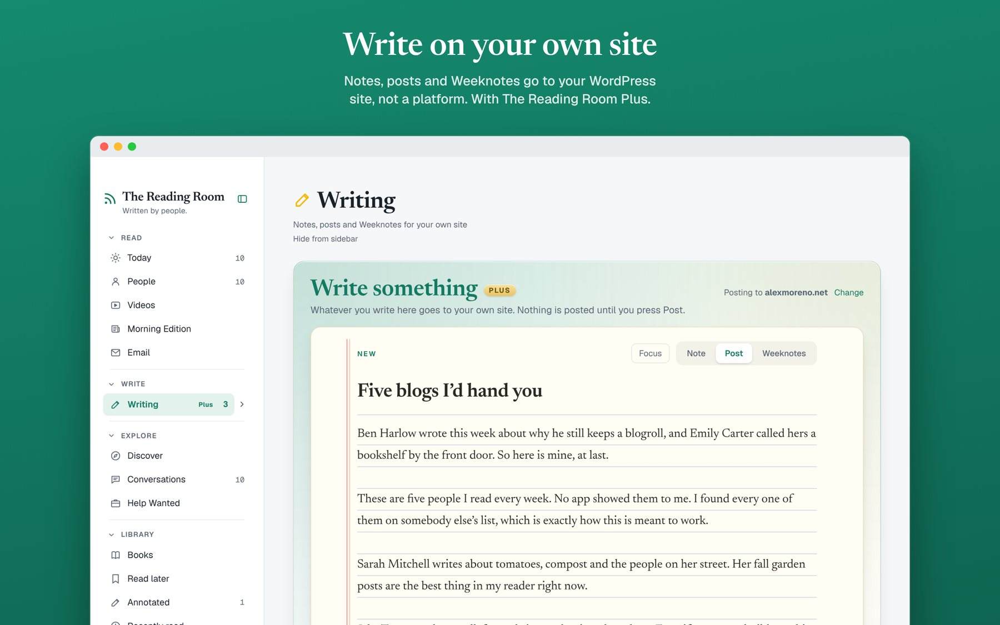
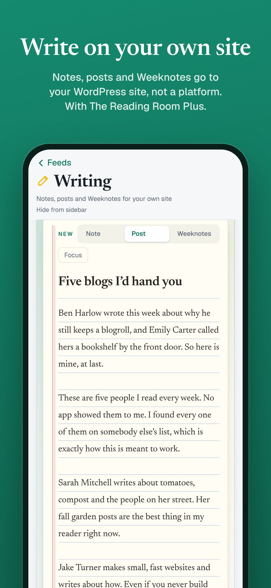
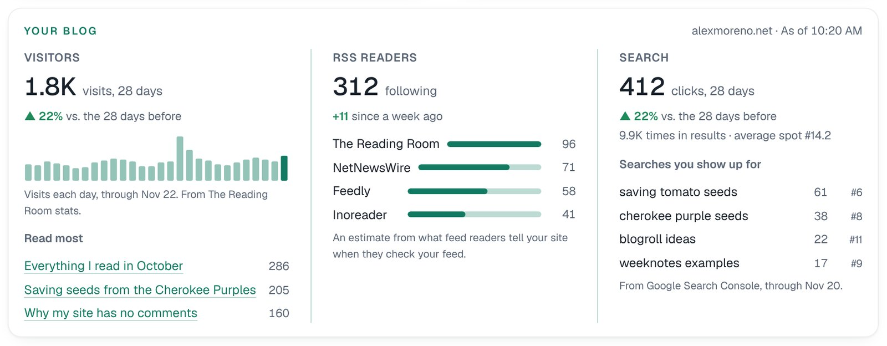
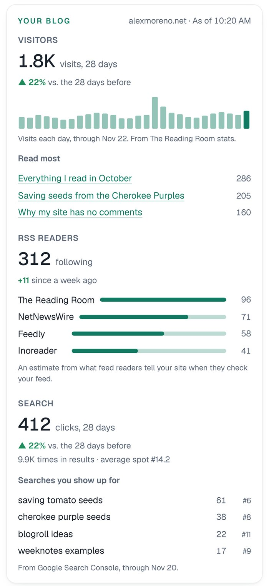

Read along early.
Try new versions of The Reading Room before they reach the App Store, and tell me what’s working and what isn’t.
Join the beta on TestFlightHow to join
Get TestFlight. It’s Apple’s free app for trying beta software. Install it on your Mac, iPhone or iPad.
Open the invite. Use the Join button on this page, on the device you want to read on.
Install and read. TestFlight offers each new version as it comes out.
In the beta now
Version 1.2.10: build 1175 on the Mac, build 182 on iPhone and iPad.
- A first run for new readers. Open the app with no feeds and it helps you start: pick a few topics, follow real writers who link to each other, and see your first conversation between them. Already reading? Find it any time in the Guide under Pick writers by topic.
- Move your note out of the way. Writing a note about a video or a post? Drag the note aside by its top bar and keep watching or reading behind it, or Tuck away to shrink it to one line. An unfinished note is kept when you close it or move around the app.
Also in this beta, from version 1.2.9 (now on the App Store for iPhone, iPad and Mac). The Mac version now needs macOS 13 Ventura or later.
- Writing. Write Notes, Posts and Weeknotes for your own WordPress site on a ruled notebook page, with Preview, Focus, a word count, your ideas, your drafts and a writing calendar. Drafts you delete on your site leave the app too. One blank line between paragraphs, just like on your site.
- Weeknotes in three steps. This week in Writing walks you through it: pick what you read, write, publish. Do the steps in any order. Your picks are kept for the week, and your Weeknotes stay one draft that you can keep coming back to.
- The Reading Room Plus. Writing and posting to your own site are part of Plus, $2.99 a year with a free first week. Reading stays free. In TestFlight, buying Plus is a free test purchase.
- Email, much better. Every kind of email reads properly, including photos sent in it and attached files you can open. People and Newsletters are kept apart, newsletters have an Unsubscribe button, and replies to the same email show as one conversation. Reply all, Forward, Archive (with Undo), Mark all read, and Show older emails. On iPhone, swipe left to archive. Email in Japanese and other languages reads properly.
- Newsletters as feeds. Many newsletters also publish a feed. Follow as a feed finds it, follows it with your other feeds, and can unsubscribe you from the emails.
- Writing email. Attach files, forward an email with its files, and keep unfinished emails as drafts. To suggests people you’ve emailed with, and you can search your whole inbox. If you like, get an alert when a person (never a newsletter) writes to you.
- Email folders. Sent, Archive, Trash and Spam sit under Email in the sidebar. Move to Inbox brings an email back, Not spam rescues one from Spam, and Empty Trash asks before it deletes anything for good.
- Pictures wait for you. In Email, pictures from the web load only when you tap Show pictures, so senders can’t tell when you read their email.
- Your blog. Your visitors, RSS readers and search traffic in Writing, with the free WordPress plugin The Reading Room stats.
- My Day, wider and simpler. On a big screen it spreads out to use the window, and the Big 3 is gone. My Day settings at the top puts every option in one place.
- Tidier sidebar. Only the folder you pick is highlighted, folding a folder keeps the feed you’re reading in view, and on iPhone folding a section hides everything in it.
- Channels to start with. New to Videos? Follow iJustine or Chris Pirillo to begin.
- Up next. On a Mac or iPad, Videos fills the empty side of the window with your newest unwatched video, ready to play, and four more below it. Channels your people share fold into one tidy row.
- Fixes. Books opens again, and Discover’s search box searches topics.
A first look at Writing
Writing is the tab that comes with The Reading Room Plus. Write a note, a full post or your Weeknotes on a quiet notebook page, then post it to your own WordPress site or save it there as a draft. Reading stays free.


The same page on iPhone and iPad. Writing posts to your site only when you press Post, and you can hide the tab from the sidebar if you just want to read.
Your blog, by the numbers
Writing also shows how your blog is doing, without opening a dashboard: visitors over the last four weeks and the posts read most, how many people follow your feed and in which apps, and the Google searches that bring people to you, with your spot in the results. It comes with The Reading Room Plus.


The visitor and RSS numbers come from The Reading Room stats, a free WordPress plugin, and they stay on your own site. Search numbers come from Google Search Console if your site already uses Google’s Site Kit plugin.
Version 1.2.9 is now on the App Store for iPhone, iPad and Mac: Writing and The Reading Room Plus, Email folders, Videos Up next, and more.
Something not right? Send feedback from TestFlight; a screenshot helps.
What to expect
This is unfinished software, so you’ll find rough edges. That’s the point. If something breaks or feels wrong, send feedback through TestFlight, or write through the support page.
About your privacy
The app works the same as always: no account, no tracking, no ads. If you connect an email address, the app talks straight to your own mail provider; your password stays in your device’s Keychain, and nothing passes through The Reading Room. When you like a post, the app tells that post’s site directly from your device, and it looks up likes and replies at webmention.io, a public service many blogs use. TestFlight is Apple’s service, and it shares crash reports, usage information and any feedback you send with the developer. Read the details.